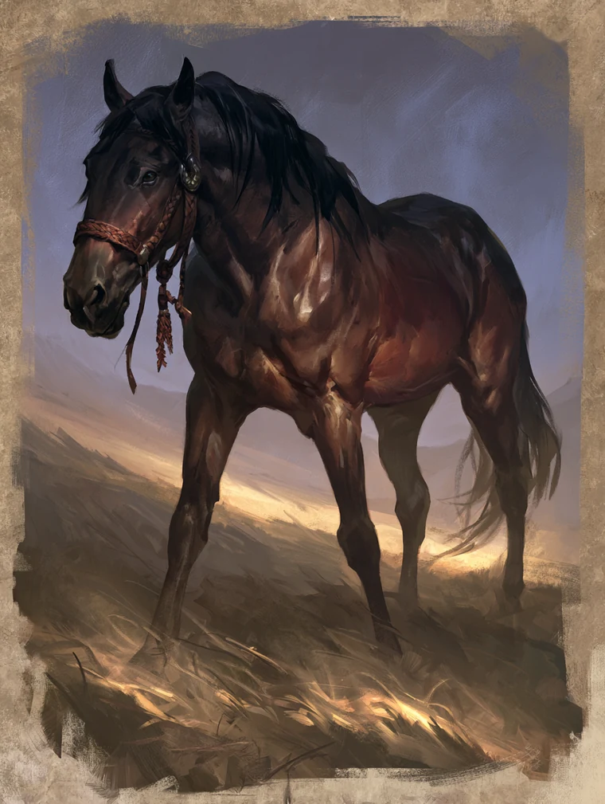

Confidential Character Dossier
Shinjō Anzu
Talisman-maker to the Shinjō · auntie to the ordu · the browband on the Khan of Khans' horse · older sister to Shinjō Harunobu
Unicorn Clan
Iuchi Meishōdō Master
School Rank 4
Glory 46
Status 33

I. Identity & Standing
Shinjō Anzu is a Unicorn artisan of the Iuchi Meishōdō Master school, held at Rank 4. Her family is Shinjō and her training is Iuchi, which is the same displacement her younger brother carries in the opposite direction — he is a Shinjō trained by the Crab. Her role is Artisan rather than Shugenja, and the distinction is the whole of her: the Iuchi cannot call on the kami as other shugenja do, so they bind spirits into objects using words of power learned from foreign sorcerers. Anzu is a maker whose material is spirits.
Her three standing values disagree with each other in a way worth reading. Status 33 and Glory 46 are both modest; she is a household craftsman known within her clan and barely outside it. Honour 40 is the school's starting value untouched, and deliberately so: she declined the devotion that would have raised it and took a rank of Medicine instead.
Physical Description
Broad-faced and weathered past her years, with the grey starting to come in at the temples and her hair worn long and loose the way riders wear it rather than pinned the way the Iuchi school prefers. Her hands are marked across the backs and knuckles from wire and hot metal, and she wears her own work — braided metal at the ears and throat.
Manner of Presence
She stands well with the Unicorn and is called auntie by half of them, including men older than she is, which is usually a courtesy. Under stress she yells, and invents her own very colourful profanity.
Current Obligation & Drive
Giri
Her giri is to Shinjō Altansarnai, Khan of Khans and daimō of the Shinjō: she makes meishōdō for the family's own use, issued where they are needed rather than given where they are wanted.
Ninjō
She wants children and has not been able to have them.
Bushōdō
She holds Compassion first and Honour last, having spent enough time putting bushi back together to conclude that most of what the code asks of them on a field is foolishness.
II. Mechanical Profile
Rings
Air
1
Earth
2
Fire
5
Water
3
Void
4
Endurance 14 · Composure 10 · Focus 6 · Vigilance 2 · Void points 4. Stance: Void. Purse: 400 zeni.
Endurance 14 is the highest on the site — the next is Harunobu at 12, and three of the five sheets sit at 8. Composure 10 is not remarkable in the same way: Setsuna, Harunobu and Morozane all match it, and only Jūjirō's 6 falls below. She is unusually hard to exhaust and ordinarily hard to compromise.
What Void 4 is for
First, it is the sixth kept die. A Void point spent on Seize the Moment rolls one additional ring die and keeps one additional die. On a Fire 5 check that is six kept dice rather than five, and she can do it four times before she runs dry. That is the reason to have it, and it applies to every check she makes, not only the supernatural ones.
Second, it is what permits Fire 5 at all. A ring cannot be raised above the character's lowest ring plus their Void ring, capped at 5. Her lowest ring is Air 1 and it has never moved. At Void 1 her ceiling was 2; at Void 4 it is 5, which is exactly where Fire now sits. The 27 experience she spent on Void was not a defensive purchase — it bought the ceiling that the 27 she spent on Fire then climbed to. Neither half of that works without the other.
Third, and only third, it fuels the talisman she was given and blunts strife. Between them Fire and Void took 54 of her 104 experience.
Vigilance 2 is what she did not fix, and with Air still at 1 it is not going to move. She is difficult to break and easy to surprise.
Social Standing
Honour 40 is the school's starting value, untouched — she took the Medicine rank rather than the devotion bonus. Glory is 44 from the Shinjō, +5 for standing well with her clan, −3 from her heritage. Status is 30 from the Unicorn, +3 from the same heritage.
Skills
Design 3 · Smithing 3 · Survival 3 · Theology 2 · Aesthetics 1 · Courtesy 1 · Medicine 1 · Sentiment 1.
Design and Smithing are both at 3, which is the shape of the whole character: the school ability activates on a Design check, and Smithing is what her father taught her before the Iuchi took her. She has advanced the priest and the smith at exactly the same rate.
School
Iuchi Meishōdō Master, Rank 4. School ability The Way of Names: as a downtime activity, a TN 2 Design check using any ring binds a spirit into an inanimate vessel, making a meishōdō talisman for one invocation of that Element she has learned. She can sustain talismans up to her school rank — at Rank 4, four, where at creation she could sustain one.
That matters more than the number suggests. The school's Rank 6 mastery, The Spirits Unbound, spends Void points to destroy her own talismans and immediately cast every invocation sealed inside them at a TN reduced by 3. Four sustained talismans and four Void points is the loaded version of that ability. She is two ranks from being able to empty her whole workshop into a single moment.
Techniques
| Technique | Type | Activation |
|---|---|---|
| The Way of Names | School ability | Downtime · TN 2 Design, any ring |
| Jūrōjin's Balm | Invocation (Earth) | Support · TN 1 Theology (Earth) |
| The Rushing Wave | Invocation (Water) | Movement · TN 2 Theology (Water) |
| Commune with the Spirits | Ritual | Downtime or Support · TN 1 Theology, any ring |
| Ancestry Unearthed | Shūji (Earth) | Opportunity spend on a Scholar or Social (Earth) check |
| Sight beyond Existence | Inversion (Void) | Once per session · TN 2 Theology (Void) |
| Sympathetic Energies | Invocation (Water) | Support · TN 2 Theology (Water) |
| Hands of the Tides | Invocation (Water) | Movement · TN 5 Theology (Water) |
| Courage of Seven Thunders | Invocation (Earth) | Support · TN 2 Theology (Earth) |
| Rise, Earth | Invocation (Earth) | Support · TN 6 Theology (Earth) |
| Cleansing Rite | Ritual | Downtime · TN 3 Theology (Void) |
| Dazzling Performance | Shūji (Fire) | Opportunity spend on an Artisan, Games or Performance (Fire) check |
Nine of the twelve carry a roller hook on the playable sheet. Ancestry Unearthed, Dazzling Performance and The Way of Names do not, because none of them is an action of its own.
Read the Earth invocations correctly. Rise, Earth is TN 6 on an Earth ring of 2, and on its face that is a check she cannot make. It is not meant to be one. A meishōdō talisman is cast off the sealed spirit's ring, not the caster's — “they make a check to activate using their skill ranks and the sealed spirit's ring value in place of their own; they still keep dice equal to their own ring” — so what she binds into an object determines what that object can throw. Her own Earth 2 sets how many dice she keeps, not how many she rolls. Rise, Earth and Courage of Seven Thunders are rack space for spirits she has not bound yet.
Ancestry Unearthed is the sharpest thing on the sheet and it never rolls. Spent on any Scholar or Social (Earth) check targeting a person, two opportunities buy “one secret of the character's family that they would prefer be forgotten, and have perhaps even worked to bury.” Three buy something the target does not know about their own ancestry.
Distinctions, Adversities, Passions, Anxieties
| Peculiarity | Ring | What it does in play |
|---|---|---|
| Famously Reliable (distinction) | Earth | Her oaths and her work are believed by default. Reroll two dice where that reputation helps. |
| Skilled Midwife (distinction) | Fire | Pregnancy, childbirth, childhood illness. Others take her advice on it. |
| Hot Pot (passion) | Earth | Removes 3 strife after preparing a communal meal. |
| Encompassing Duty (adversity) | Earth | Cannot relax or attend to anything unrelated to the family's talismans. |
| Conspiracy (anxiety) | Earth | 3 strife on interacting with any unfamiliar authority figure. |
Possessions
Ceremonial clothes · travelling clothes · wakizashi · horsebow (Range 2–4, Damage 4, Deadliness 5) · calligraphy set · travelling pack · maker's punch · herbal medicines.
The punch is her mark, struck into the metal, and it is not sentimental: Famously Reliable only pays if people can tell which pieces are hers. The herbal medicines came from the Ujik midwife.
Experience
104 of 104 spent — advancements 86, techniques 18. Rings took 54 of it: Fire 3→5 and Void 1→4. The rest went to Design and Smithing to 3, Survival to 3, Theology to 2, Courtesy to 1, and six new techniques.
III. The Way of Names
The Way of Names uses the element of the practitioner's choice, and most masters use Earth to settle a spirit into place or Void to meet it on its own terms. Anzu uses Fire: she doesn't settle the spirit, she inflames it into wanting to be there. It's faster, it takes worse, and the talismans that survive it have vocal opinions.
The binding is a scene, not a downtime roll
This is the hinge of the build and it is easy to miss. Creating a talisman is not a die roll made between adventures — it is the Seal in an Object social objective, completed during an otherworldly encounter, and it costs momentum equal to the spirit's focus plus double its intrigue rank. Momentum accumulates over a played scene, check by check, against a spirit that is arguing back.
Which means the Design check is a Scheme action in a conflict scene, and a conflict scene means a stance. Fire Stance: “when you succeed on a check, you count as having one additional bonus success for each (st) result on your check.” Anzu's method converts the strife of the argument directly into momentum. She accumulates faster than an Earth or Void binder and takes the whole cost of it into her own strife track — which is what a Composure of 10 is for, and why “it takes worse” is a description of the mechanic and not a figure of speech.
Stability, when the binding is done, is her excess momentum plus her ranks in Design minus the spirit's Theology. Design 3 is not a convenience. It is half the equation that decides whether the thing she made holds.
That method has a cause, and it is not doctrinal. The Iuchi mark their students young, and the family gave her up the year she was marked. Before that she was her father's girl: the horse-lines and the forge, wire and hooves and the fitting of tack. She was taught to be a smith before she was taught to be a priest, and she never stopped applying the first training to the second — heat it, work it, and it either takes or it doesn't.
It also explains what she is known for. The one piece of her work the whole clan can name is a piece of tack, which is the exact intersection of the two things her father put in her hands.
Why the family word for her is reliable
A meishōdō that fails does not merely stop working; it lets something out. Anzu made the browband Ping has worn since Shinjō Altansarnai first rode her, and in all those years it has needed neither repair nor replacement — which is why the word the family uses for her work is not clever but reliable, and why she is the one they send for when the thing must not fail.
The tradition is suspect and she knows it
Meishōdō is foreign in origin and the Empire has never been comfortable with it. The Phoenix decide what counts as proper practice and the court decides what the Emperor hears, and the Iuchi way answers to neither on its own merits. Anzu assumes any authority she has not yet met has already been told something about meishōdō, and it is unlikely to have been kind, or even true.
She is right to worry, and the campaign has already proved it. At the City of the Rich Frog the magistrates walked into a trade in bound spirits — a fire spirit out of the Burning Sands sealed into a foreign pendant, released to burn a theatre, and a noblewoman possessed by another. The apparatus was her art, used as a weapon and moved through a port. Nobody has told her.
IV. Interior Architecture
The count
The family's talismans are never finished, only sufficient, and Anzu keeps a running count in her head of which ones are ageing and who is carrying them; anything else has to be done around it, and the list is never completed.
What calms her
Occasionally she is able to cook outside for whoever is there — a pot big enough for everyone, and the children eating standing up between rides. The word occasionally is the count doing its work.
The two things decided without her
She was taken out of the forge and the horse-lines the year somebody noticed an aptitude she had not asked for. And she wants children and has not been able to have them. Neither was a choice she made, and the second is the one nobody in the ordu mentions.
What she was taught, and by whom
She and all eight of her siblings were delivered by the same old Ujik woman, who stayed long enough afterwards to teach Anzu what she knew: how a birth goes wrong and how early it can be read, which fevers in a child are worth waking the ordu for, and the names of the Ten Lords of Death, of whom the Child Bearer is one. Anzu is who they send for when a child is coming. She has never had one.
V. Established Relations
Shinjō Harunobu — younger brotherUnicorn / Shinjō
Left for the Crab lands at about nine and has been a stranger to the family since; a prisoner of the Lion from the campaign's second session until shortly before its forty-eighth. Their parents' dossier line is that the siblings are “warm, loving, and largely strangers to him.” Anzu is older, which makes her one of the few people alive who remembers him before the Crab had him. She made him Musubi.
Shinjō Altansarnai — lordUnicorn / Shinjō
Khan of Khans and daimō of the Shinjō — in this clan the two offices are one. Anzu's giri runs to her, her browband rides on her horse, and it was Altansarnai who put Harunobu's name forward on the Unicorn side of the Crane marriage. She was a guest at the wedding. Three separate threads, one woman, and her seat is currently in play.
The old Ujik midwife — teacher, unnamedUjik
Delivered Anzu and all nine of them, and stayed to teach her. The herbal medicines in her pack are hers. See IV.
Her parents and eight siblings — familyUnicorn / Shinjō
Her father taught her the horse-lines and the forge and both parents still say she was better with a hammer at eleven than a smith's apprentice — which is the nearest either of them comes to saying they would rather have kept her.
Doji Setsuna — sister-in-lawCrane / Doji
One meeting, at the wedding, and no contact since. They are unlikely to cross paths. Worth noting anyway: Kogarashi, the white Utaku courser that is the single object of Setsuna's unguarded affection, was a wedding gift from Harunobu's family — which is to say from Anzu's.
The children of the ordu — auntieUnicorn
All of them. This is the passion, the distinction and the ninjō meeting in one place.
VI. Kurige

A brown Shinjō Courser, named for her colour — kurige is simply the word for a chestnut coat. A woman raised in her father's horse-lines called the horse what the lines called it and never improved on it.
The breed is not a warhorse. The corpus is blunt about it: “renowned for speed and stamina but high-spirited and flighty. Ideal for scouts, courtiers, and mounted archers, but ill-suited to traditional battle.” Which suits her rider, who carries a horsebow and is not a soldier.
Combat
3
Intrigue
1
Endurance
10
Composure
4
Focus
6
Demeanour Cautious — Earth −2, Air +2. Loyal Steed and Fleet of Foot. Hooves at Range 1–2, Damage 7.
The Cautious demeanour is the breed's, not a quirk of this animal: a Shinjō courser is built to notice things and leave. Kurige is easier to startle than Harunobu's Moto charger and considerably faster over open ground.
VII. Two Objects
One she made, and one she was given. They are the two ends of her craft.
Musubi — made for her brother
A nemuranai in the form of a braided knot, made for Harunobu after his release. Built to the pattern the books use for putting an invocation into an object a non-shugenja can carry: Durable and Sacred, with Jūrōjin's Balm sealed inside, which the wearer may perform once per session using Survival instead of Theology.
The invocation reduces the TN of all checks to resist poison and disease by 2, and the bearer cannot become intoxicated. For a man who spent forty-six sessions a prisoner it is the obvious gift; the second clause is the better one, because it also works in a room full of Lion courtiers, and Harunobu holds Courtesy as his least significant tenet.
Its quirk: the knot works itself loose whenever he says he is fine and is not. His own dossier calls him unreachable about himself. His sister made a charm that will not let him lie about it.
Sight beyond Existence — given to her
She is named after her grandmother's spirit companion, and befittingly it seems a spirit has chosen her as well, although its strange powers convey the Void.
Mechanically this is the Spirit Companion heritage: an ancestor made an agreement with a spirit, and Anzu holds an additional meishōdō talisman she did not bind. Once per session, immediately after an action of great consequence, a TN 2 Theology (Void) check scries another outcome and returns to the moment before — all effects undone, with only Anzu and the target aware of the reality that no longer is.
It is by a distance the most powerful thing she owns, and it is not hers. The heritage table rolls a ring for the talisman and sends one roll in five to Void, then instructs the player to select a rank 1 invocation — of which the game contains none in that element. A rank 1 Void inversion is the nearest legal object.
VIII. Timeline
Childhood · the ordu
Her father's girl.
Delivered by the old Ujik midwife, as all nine of them were, and taught by her afterwards. Raised to the horse-lines and the forge; better with a hammer at eleven than a smith's apprentice.
The year she was marked
Given up to the Iuchi.
The Iuchi mark their students young. She was taken out of the forge for an aptitude she had not asked for, and brought the smith's method with her.
Her brother, at nine
Harunobu left for the Crab lands.
He did not come back the same, and the siblings have been strangers to him since.
The browband
Made for the Khan of Khans' horse.
Ping has worn it since Altansarnai first rode her. Neither repair nor replacement in all that time, which is the whole of Anzu's reputation.
Present
The count, and a knot for her brother.
Talismans for the family, issued where they are needed. Harunobu is home from the Lion, and she has made him Musubi.
IX. Advancement
What she has already done
The three things worth buying first have been bought. Design 1→3, the skill her school ability activates on and the stability term for everything she makes. Theology 1→2, which every invocation and ritual she owns is cast with. And Void 1→4, which took her from a single Void point to four and made the talisman she was given genuinely usable.
She also took Fire 3→5, which is the element she binds with and the most expensive thing on the sheet at 27 experience for two ranks. Nothing about that is efficient; it is the choice of someone who intends to keep working the way she works.
Where it goes next
- School Rank 5, then 6. The Spirits Unbound is the endgame and it is now within reach: destroy sustained talismans to cast everything inside them at TN −3. She has the Void points and the sustain capacity to make it worth having.
- Design 3→4. Still the single skill the whole character runs through, and still in curriculum.
- The Utsuko Pattern (3 XP, rarity +4) — a meishōdō specialist design that adds the creator's Void ring to talisman stability. At Void 1 it was worth almost nothing. At Void 4 it is one of the best three experience she can spend.
Deliberately not recommended
- Air. It is 1 and has stayed 1 through 104 experience, which at this point is a decision rather than an omission. Focus 6 and Vigilance 2 are the price and she has already agreed to pay it.
- Martial skills. All still 0. The wakizashi and horsebow remain school issue.
X. Trajectory
The obvious use of her, if she is ever played
Ancestry Unearthed against a person with something buried. It costs no action and no roll of its own — only opportunities on a check she was making anyway — and it is pointed at exactly the kind of secret this campaign is built out of.
The obvious danger to her
The meishōdō trade at the City of the Rich Frog is an existing, unresolved thread in which her art is the weapon. She has a Conspiracy anxiety, a foreign practice, an Iuchi training, and a court that has already seen what a bound spirit does when it gets loose.
How this should end
She will receive a great vision while riding, and will perish from the fall off her horse.
Which is the talisman's bill. She has four Void points to spend on it now and a Vigilance of 2 to notice what it costs her, on a horse whose demeanour is Cautious and whose whole breeding is to notice something and move.
❖The Fragile Peace · Legend of the Five Rings